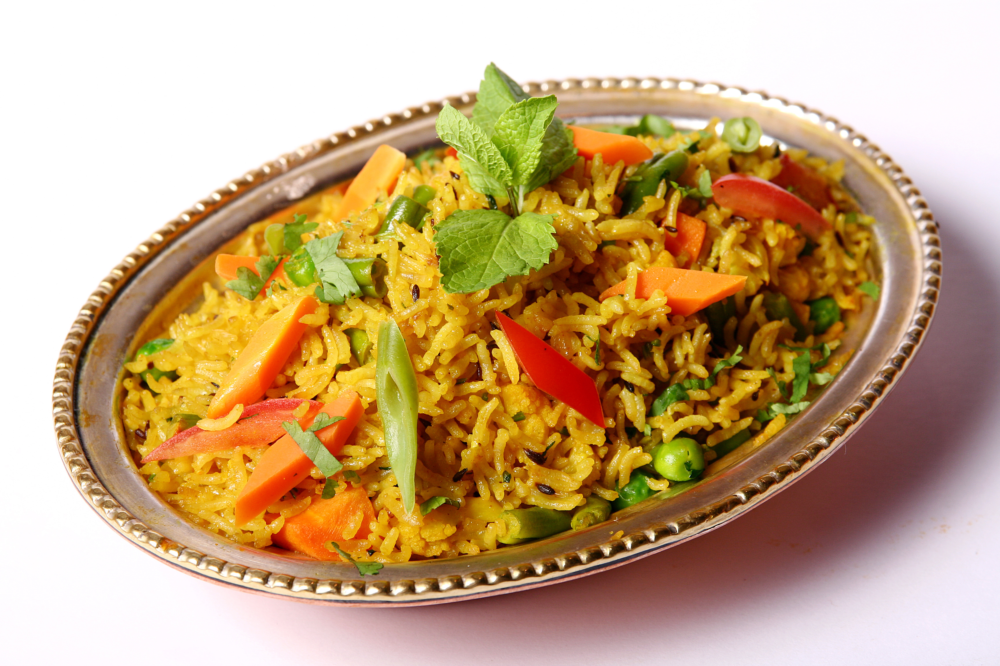
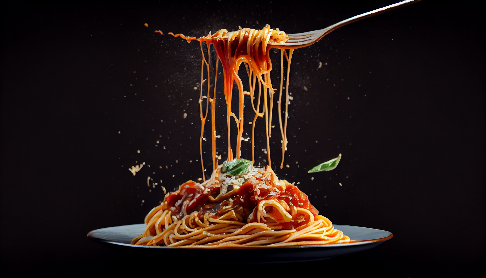

Yes, it’s true that eggs — specifically egg yolks — are high in cholesterol. A single large egg has approximately 186 mg of dietary cholesterol. However, before eliminating eggs from the menu, it’s worth investigating the dietary guidelines provided by the U.S. Department of Agriculture (USDA). One study suggests that eggs don’t raise cholesterol at all for about 70% of people. According to the researchers, cholesterol in the diet doesn’t necessarily raise cholesterol in the blood. The remaining 30%, who are called “hyper responders,” can mildly raise total and low-density lipoprotein (LDL) cholesterol by consuming eggs.
Eating eggs leads to elevated levels of high-density lipoprotein (HDL), also known as the “good” cholesterol. People who have higher HDL levels have a lower risk of heart disease, stroke and other health issues. According to one study, eating two eggs a day for six weeks increased HDL levels by 10%.
As we get older, we need to take better care of our eyes. Egg yolks contain large amounts of lutein and zeaxanthin, helpful antioxidants that help reduce the risk of cataracts and macular degeneration in the eyes. Eggs are also high in vitamin A, which is beneficial for eye health.


FRESH FOOD CAFE
Our Cafe is a family-owned restaurant that has been proudly serving around the 1940s located on the corner of Broadway and West 112th Street in New York.